Set up your development environment on Windows
Windows invites you to code as you are. Use whatever coding language or framework you prefer - whether developing with tools on Windows or with Linux tools on the Windows Subsystem for Linux, this guide will help you get set up and install what you need to start coding, debugging, and accessing services to put your work into production.
Developer tools

Windows Terminal
Customize your terminal environment to work with multiple command line shells.
Install Terminal
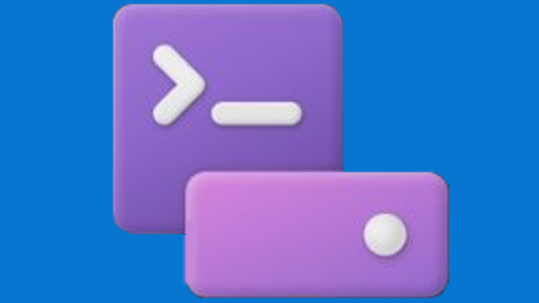
Dev Drive
Improve performance by storing project files on a Dev Drive and keep files secure with trust designation, antivirus configuration, and attached filters.
Create a Dev Drive

Windows Package Manager
Use the winget.exe client, a comprehensive package manager, with your command line to install applications on Windows.
Install Windows Package Manager
Windows Subsystem for Linux
Use your favorite Linux distribution fully integrated with Windows (no more need for dual-boot).
Install WSL
WinGet Configuration
Consolidate manual machine setup and project onboarding to a single command that is reliable and repeatable.
Author a configuration file
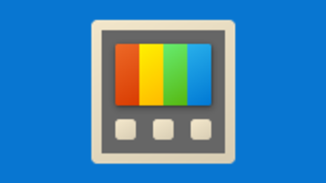
Microsoft PowerToys
Tune and streamline your Windows experience for greater productivity with this set of power user utilities.
Install PowerToys
Sudo for Windows
Sudo for Windows is a new way for users to run elevated commands directly from an unelevated console session.
Enable and configure Sudo for Windows
AI for Windows apps
Windows AI Hub
A new era of AI has arrived at Microsoft. See how AI is being integrated in Windows 11.
Visit Windows AI Hub
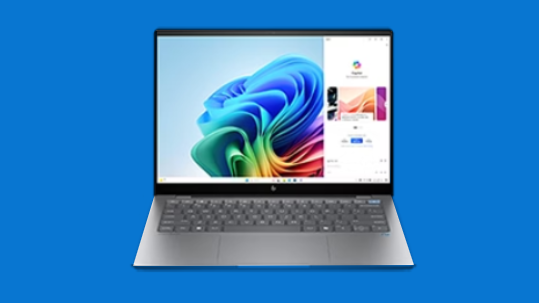
Copilot+ PCs Developer Guide
Copilot+ PCs are a new class of Windows 11 hardware powered by a high-performance Neural Processing Unit (NPU).
Develop for Copilot+ PCs
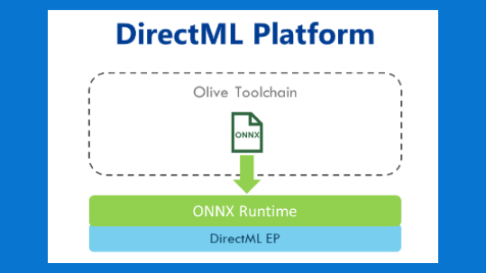
DirectML
Pairing DirectML with the ONNX Runtime is often the most straightforward way for many developers to bring hardware-accelerated AI to their users at scale.
Get Started with DirectML
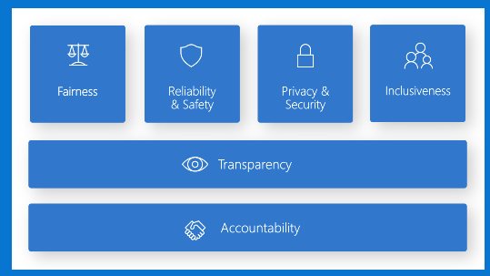
Responsible AI guidance for Windows
Recommended responsible development practices to use as you create apps that utilize AI features on Windows.
Develop Responsibly
Development paths
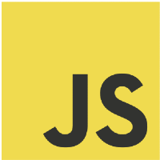
Get started with JavaScript
Get started with JavaScript by setting up your development environment on Windows or Windows Subsystem for Linux and install Node.js, React, Vue, Express, Gatsby, Next.js, or Nuxt.js.
Get started with Python
Install Python and get your development environment setup on Windows or Windows Subsystem for Linux.
Get started with Android
Install Android Studio, or choose a cross-platform solution like .NET MAUI, React, or creating a PWA, and get your development environment setup on Windows.
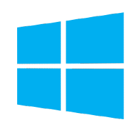
Get started building Windows apps
Get started building desktop apps for Windows using the Windows App SDK, UWP, Win32, WPF, Windows Forms, or updating and deploying existing desktop apps with MSIX and XAML Islands.
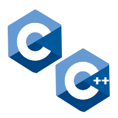
Get started with C++ and C
Get started with C++, C, and assembly to develop apps, services, and tools.

Get started with C#
Get started building apps using C# and .NET.
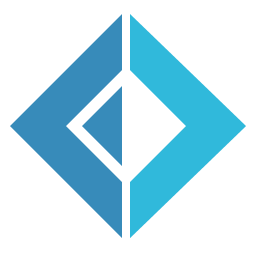
Get started with F#
Get started building apps using F# and .NET.
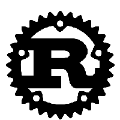
Get started with Rust
Get started programming with Rust—including how to set up Rust for Windows by consuming the windows crate.
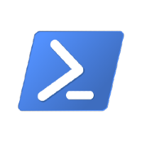
Get started with PowerShell
Get started with cross-platform task automation and configuration management using PowerShell, a command-line shell and scripting language.
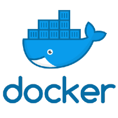
Get started with Docker Desktop for Windows
Create remote development containers with support from Visual Studio, VS Code, .NET, Windows Subsystem for Linux, or a variety of Azure services.
Get started with Blazor
Get started with Blazor, a client-side UI framework within ASP.NET Core. Use HTML, CSS, and C# (rather than JavaScript) to create UI components and single page applications for the web.
More for developers

VS Code
A lightweight source code editor with built-in support for JavaScript, TypeScript, Node.js, a rich ecosystem of extensions (C++, C#, Java, Python, PHP, Go) and runtimes (such as .NET and Unity).
Install VS Code

Visual Studio
An integrated development environment that you can use to edit, debug, build code, and publish apps, including compilers, intellisense code completion, and many more features.
Install Visual Studio

Azure
A complete cloud platform to host your existing apps and streamline new development. Azure services integrate everything you need to develop, test, deploy, and manage your apps.
Set up an Azure account
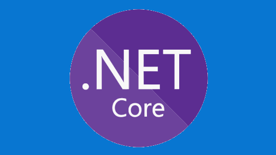
.NET
An open source development platform with tools and libraries for building any type of app, including web, mobile, desktop, gaming, IoT, cloud, and microservices.
Install .NET
Run Windows and Linux
Windows Subsystem for Linux (WSL) allows developers to run a Linux operating system right alongside Windows. Both share the same hard drive (and can access each other’s files), the clipboard supports copy-and-paste between the two naturally, there's no need for dual-booting. WSL enables you to use BASH and will provide the kind of environment most familiar to Mac users.
Learn more in the WSL docs.
You can also use Windows Terminal to open all of your favorite command line tools in the same window with multiple tabs, or in multiple panes, whether that's PowerShell, Windows Command Prompt, Ubuntu, Debian, Azure CLI, Oh-my-Zsh, Git Bash, or all of the above.
Learn more in the Windows Terminal docs.
Transitioning between Mac and Windows
Check out our guide to transitioning between a Mac and Windows (or Windows Subsystem for Linux) development environment. It can help you map the difference between: